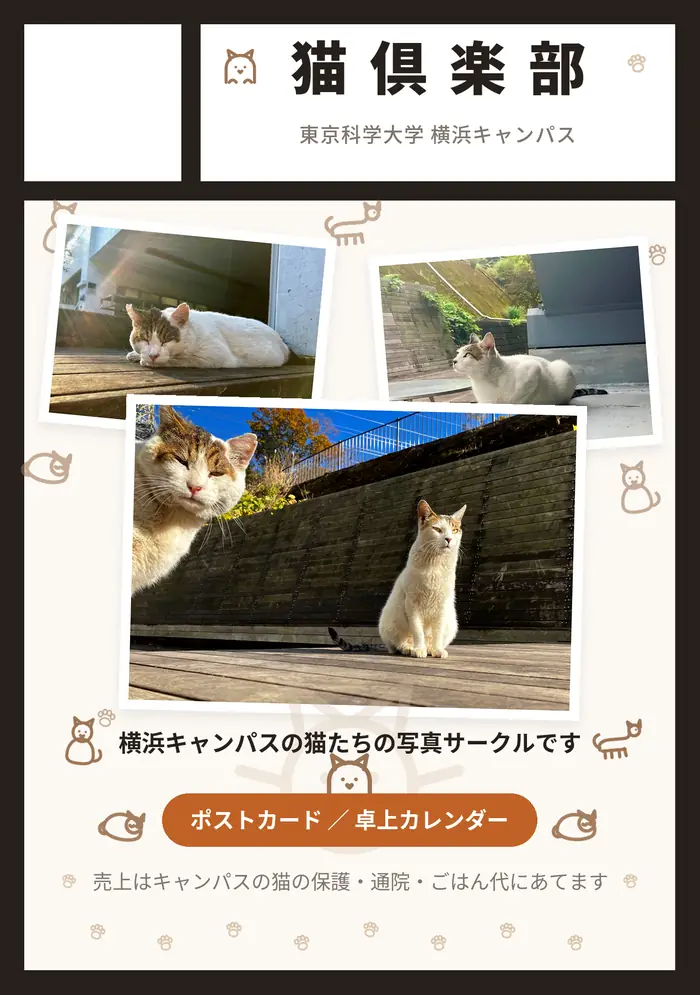
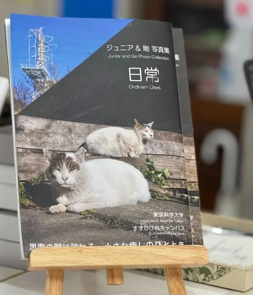

剛くん
ごうくん
発見：横浜キャンパス（旧・すずかけ台）
ジュニアと一緒にいることが多い猫です。その日の気分で食べる量が変わるので、残した量もあわせて記録しています。
気分が良い時なら、べつにさわってもいいにゃん
東京科学大学のキャンパスには、長く見守られてきた猫たちがいます。ごはん、通院、寒さ対策。日々の小さな積み重ねを、有志で分担しながら続けています。
いま見守っている猫たちと、これまで見守ってきた猫たちです。発見されたキャンパスと、当時の記録をもとに紹介します。
ごうくん
発見：横浜キャンパス（旧・すずかけ台）
ジュニアと一緒にいることが多い猫です。その日の気分で食べる量が変わるので、残した量もあわせて記録しています。
気分が良い時なら、べつにさわってもいいにゃん
正式名称：おとーさんジュニア
発見：横浜キャンパス（旧・すずかけ台）
剛くんと行動を共にしていることが多い猫です。ごはんの食べっぷりがよく、どれくらい食べたかを毎回記録しています。
いっぱい撫でてもいいけど、チュールの用意はしてるのかにゃ？
さいくん
発見：国府台キャンパス
スゥちゃんのことが大好きで、いつも後を追っていたサイくん。小さなスゥちゃんを見守るような姿が記録されています。
えんちゃん
発見：国府台キャンパス
保護猫シェルターを卒業し、最初に新しい家族のもとへ旅立ったエンちゃん。新しい名前は「媛（ヒメ）」ちゃんになりました。
すぅちゃん
発見：国府台キャンパス
天真爛漫で無邪気なスゥちゃん。保護猫シェルターを卒業し、エンちゃんに続いて新しい家族のもとへ旅立ちました。
まるちゃん
発見：国府台キャンパス
子どもたちの旅立ちを静かに見守ったお母さん猫。とても小柄で、人のそばに長くいてくれた姿も記録されています。
だいくん
発見：横浜キャンパス（旧・すずかけ台）
人に慣れ、膝に乗るのが好きな甘えん坊。元気いっぱいで、先住猫との接し方を学びながら家猫になる準備を進めていました。
あやさん
発見：横浜キャンパス（旧・すずかけ台）
2021年頃から時々姿を見せた、ふっくらとした美しい猫。剛くんやジュニアとも穏やかに過ごし、2022年4月以降は見かけられていない記録です。
きてぃちゃん
発見：横浜キャンパス（旧・すずかけ台）
2017〜2018年頃に見守られた小さな黒白猫。ジュニアと一緒に現れ、ごはんを食べに来ていましたが、人にはなかなか近づかなかったそうです。
はなちゃん
発見：横浜キャンパス（旧・すずかけ台）
2014年春に生まれた4きょうだいの1匹。無邪気で、G3棟のウッドデッキでお腹を見せて眠る姿も。2015年11月に家猫になりました。
りーふくん
発見：横浜キャンパス（旧・すずかけ台）
背中の葉っぱのような模様が名前の由来。2020年頃に痩せた姿で現れましたが、人懐っこく、のちに新しい家族のもとへ迎えられました。
くろしろねこさん
発見：横浜キャンパス（旧・すずかけ台）
2018年頃、すずかけ台キャンパスで数回だけ目撃された黒白猫。詳しい来歴は分かっていません。
写真と記録がそろった猫から、紹介を少しずつ増やしています。
いただいた支援は、キャンパスの猫たちのごはん・ケア・保護費用にあてています。使いみちは会計報告としてこのページで公開します。
いま実際に足りていないフードや物資を、Amazonのほしい物リストにまとめています。リストから選んで贈っていただくと、そのまま活動に届きます。金額の大小は問いません。
ほしい物リストを見る（準備中）※ 贈り主の氏名・住所は、設定によっては活動側に表示されません。お名前を残されたい場合はギフトメッセージをご利用ください。
猫倶楽部は、東京科学大学のキャンパスにいる猫たちを見守る有志の集まりです。学生と教職員が交代で、ごはんと見守りを担当しています。
担当を分担して、キャンパスの猫たちにごはんをあげています。その日にどれくらい食べてもらえたか、どこにいたかを記録して、次の担当者に申し送りしています。
ダニ予防などのケアを定期的に行っています。体調に気になるところがあれば、近隣の動物病院に相談したうえで対応を決めています。
キャンパスで生まれた子猫や、そのままでは冬を越せない猫については、一時的な預かりと里親探しを行うことがあります。
活動を続けるうえで、大きく2つの課題があります。
① 人手が足りていません。 担当できる人が限られていて、当番の調整に苦労することがあります。当番の空き状況はごはん板（関係者向け・あいことばが必要です）で見られます。
② 費用がかかります。 ごはん代とダニ予防は毎月のことですし、保護した猫の治療費は1匹あたり数万円かかることもあります。
猫たちの写真からグッズを作っています。売上はキャンパスの猫の保護・通院・ごはん代にあてています。

工大祭の同人即売会「こみてっく！」に出展します。ポストカードなどを持っていく予定です。
売上はキャンパスの猫の保護・通院・ごはん代にあてます。
即売会の会場は大岡山キャンパスです。
価格・セット内容は調整中
キャンパスの猫たちの写真を使ったポストカードです。工大祭での頒布に向けて準備を進めています。
工大祭に向けて準備中価格は未定
1年を通して猫たちと過ごせる卓上カレンダーです。制作するかどうか、時期も含めて検討中です。
検討中
いただいた支援と、その使いみちを年に1回まとめて公開します。支援してくださった方に、お金の流れが見える状態を保ちたいと考えています。
最初のご報告は、2026年度分（2027年3月まで）をまとめて、2027年の春ごろに公開する予定です。集計ができしだい、この表を更新します。
| 項目 | 金額 | 内訳・備考 |
|---|---|---|
| グッズ売上 | — 円 | ポストカード等 |
| ほしい物リストでのご支援 | — 点 | フード・物資 |
| ごはん代 | — 円 | — |
| ダニ予防・通院費 | — 円 | — |
| 保護にかかった費用 | — 円 | — |
| 収支 | — 円 | — |
※ 領収書等の記録は活動内で保管しています。内容についてご質問があればお問い合わせください。
日々の見守りのなかで撮りためた写真です。クリックすると大きく表示され、矢印キーで次の写真に進めます。もっと見たい方はアルバムへどうぞ。
写真は活動に関わっている有志が撮影したものです。
無断での転載・商用利用はご遠慮ください。
活動へのご参加、グッズや支援についてのご質問は、メールでお願いします。
メールアドレスは準備中です
活動用のメールアドレスを準備しています。使えるようになりましたら、ここに掲載します。
それまでのあいだは、下の「Science Tokyo cats」のFacebookページからご連絡ください。
猫の体調など急ぎのご用件は、学内の関係者へ直接お伝えください。